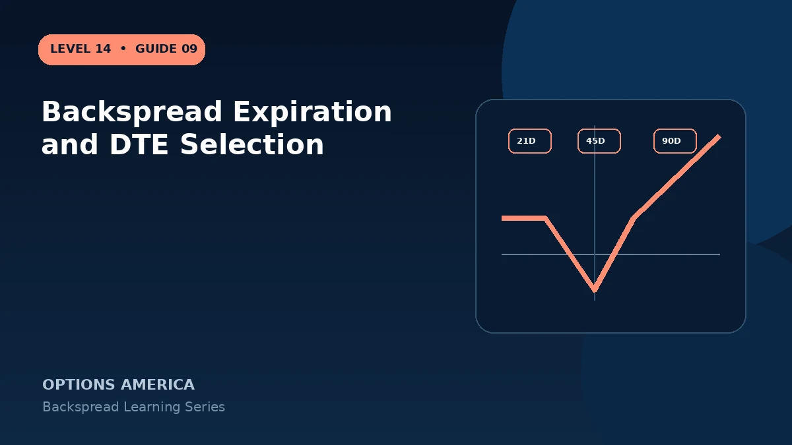

Choose backspread expiration using catalyst timing, gamma, vega, theta, liquidity and the time required for an extreme move.
Near-term backspreads
Short duration can provide powerful gamma around an event, but long options decay quickly if the move does not occur. Price can also settle in the maximum-loss zone with little time to recover.
Longer-duration backspreads
More time raises long-option value and vega, commonly increasing debit. The thesis has more time to develop, but the trade remains exposed to volatility contraction and path changes.
Event alignment
Choose an expiration that contains the catalyst and enough post-event time for execution. Earnings IV can be elevated across strikes, so model the expected move and volatility crush together.
Management date
Set a latest date to close or roll if the move has not appeared. Waiting for expiration merely because loss is defined can allow the long options to decay while short-option risk remains.
A practical example
For an announcement in four weeks, compare 35-DTE and 70-DTE backspreads. The first has more concentrated gamma; the second costs more and carries greater vega.
This simplified example focuses on selected expiration outcomes; live prices and risks will differ. Live option prices also reflect the underlying price, time decay, rates, dividends, liquidity and transaction costs. Greeks are theoretical estimates, not guarantees.
Turn the payoff into a trading plan
Before entering backspread expiration and dte selection, write down the stock price, both strikes, expiration, contract ratio and total opening credit or debit. Then calculate the quiet-side result, maximum loss at the long-option strike and the far-move breakeven. These three checkpoints make the position easier to monitor and help prevent the attractive tail payoff from hiding the loss valley.
Test at least five scenarios: no move, a move to the short strike, a move to the long strike, a move to breakeven and a move well beyond breakeven. Repeat the exercise with implied volatility higher and lower and with less time remaining. The resulting range is more useful than a single payoff line because a live backspread can change substantially before expiration.
Finally, define the catalyst, maximum acceptable loss, review date and closing method in advance. Use one multi-leg order whenever possible, confirm every fill and recalculate the remaining position before changing any leg. Assignment, liquidity and transaction costs belong in the plan even when the expiration loss appears defined.
Frequently asked questions
Is nearest expiration best?
No. It may not provide time for the thesis.
Do longer options improve safety?
They add time but also cost and vega exposure.
Should expiration include earnings?
Only when the event is intentional and modeled.
Continue the Backspread Strategies cluster
Explore related guides: Backspread vs Ratio Spread · Theta and Time Decay in a Backspread · Put Ratio Backspread Explained. For a structured sequence, use the free Level 14 – Backspread course.
Options involve risk and are not suitable for every investor. This material is educational and is not investment, tax or legal advice. Greeks are theoretical estimates, and contract terms and broker requirements can vary.